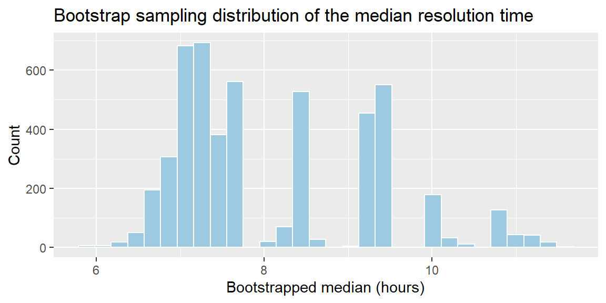

The last two sections worked because \(\bar{x}\) and \(\hat{p}\) have known formulas for their standard errors (\(\sigma/\sqrt{n}\) and \(\sqrt{p(1-p)/n}\)), derived from theory. But plenty of statistics businesses actually care about don’t have a tidy formula: the median resolution time for support tickets, the ratio of two group means, a trimmed average that ignores outliers, a correlation coefficient. For these, we still want to know how much the statistic would vary across repeated samples, but we just can’t look the answer up in a formula. Bootstrapping solves this by approximating the sampling distribution computationally, directly from the one sample we actually have.
There are really two different reasons we might not know the shape of a statistic’s sampling distribution. The first is that even \(\bar{x}\) and \(\hat{p}\) only get their normal shape under certain conditions. The formulas in Chapter 9 and Chapter 10 give us the center and spread of these sampling distributions unconditionally, but the normal shape depends on the Central Limit Theorem holding for \(\bar{x}\) (which needs a large enough sample, especially if the population is skewed) or on \(np \ge 15\) and \(n(1-p) \ge 15\) holding for \(\hat{p}\). When a sample is small, or a proportion is close to 0 or 1, those conditions can fail, and we no longer have a good reason to believe the sampling distribution is approximately normal, even though we can still compute a mean and standard error for it.
The second reason is more fundamental: some statistics simply have no established theory at all describing the shape of their sampling distribution, no matter how large the sample is. The median, a correlation coefficient, and a trimmed mean all fall into this category. There’s no Central-Limit-Theorem-style guarantee waiting in the wings for these statistics.
Bootstrapping handles both situations the same way. Rather than relying on a formula or a theorem to tell us the shape in advance, we approximate the sampling distribution directly from the data, whether the shape is in question because a condition failed or because no theory exists for that statistic in the first place.
11.2 The Core Idea: Resampling as a Stand-In for the Population
We can’t actually go collect thousands of new samples from the true population to see how a statistic varies. That’s the whole reason sampling distributions are theoretical constructs. Bootstrapping’s insight is to use the sample we do have as a stand-in for the population, and simulate “new samples” by resampling from it, with replacement.
NoteWhere the name comes from
“Bootstrapping” comes from the phrase “pulling yourself up by your bootstraps”: we use the sample itself to learn about its own variability, without needing a formula or a bigger dataset. The key assumption is that if the original sample is reasonably representative of the population, then resampling from the sample behaves enough like sampling from the population to be useful.
ExampleExample 4.9: Why the median needs bootstrapping
A support team wants to understand typical ticket resolution time. Resolution times are heavily right-skewed: most tickets close quickly, but a few drag on for days, so the team reports the median, not the mean, as their headline number. Unlike \(\bar{x}\), the sample median has no simple formula like \(\sigma/\sqrt{n}\) for its standard error; the math is much more complicated and depends on the shape of the underlying distribution. Bootstrapping lets the team estimate how much their reported median would vary from sample to sample, without needing that formula.
11.3 How Bootstrapping Works
Given an original sample of size \(n\) and a statistic of interest (a median, a correlation, anything):
Resample with replacement from the original sample to create a bootstrap sample, also of size \(n\).
Compute the statistic (e.g., the median) on this bootstrap sample.
Repeat steps 1 and 2 many times, typically several thousand.
Examine the resulting distribution of bootstrap statistics. This is the bootstrap distribution, and it approximates the true sampling distribution of the statistic.
NoteWhy sample with replacement?
Sampling with replacement means the same original observation can appear more than once in a bootstrap sample, and some observations may not appear at all. This is essential: it’s what allows each bootstrap sample to differ from the original and from each other, mimicking the variability of drawing genuinely new samples. Sampling without replacement would just reshuffle the same \(n\) values every time, so every bootstrap sample would contain exactly the same values as the original, and we’d learn nothing about variability.
ExampleExample 4.10: Bootstrapping the median resolution time
Suppose the support team has resolution times (in hours) for 30 recent tickets, and the distribution is right-skewed. We can bootstrap the sampling distribution of the median directly in R:
library(tidyverse)set.seed(2025)resolution_times <-rlnorm(30, meanlog =2, sdlog =0.6) # 30 simulated ticket resolution timesboot_medians <-replicate(5000, { boot_sample <-sample(resolution_times, size =length(resolution_times), replace =TRUE)median(boot_sample)})ggplot(tibble(median = boot_medians), aes(x = median)) +geom_histogram(bins =30, fill ="#9ecae1", color ="white") +labs(title ="Bootstrap sampling distribution of the median resolution time",x ="Bootstrapped median (hours)", y ="Count")

Each of the 5,000 bootstrap samples is built by resampling, with replacement, from the original 30 resolution times, and computing the median of that resample. The histogram of all 5,000 medians is our approximation to the sampling distribution of the median, something we had no formula for.
11.4 Using the Bootstrap Distribution
Once we have a bootstrap distribution, we can use it the same way we’d use a theoretical sampling distribution. Most immediately, we can get a bootstrap standard error: the standard deviation of the bootstrap statistics themselves.
ExampleExample 4.11: Bootstrap standard error
Continuing Example 4.10, the standard deviation of the 5,000 bootstrapped medians estimates the standard error of the sample median:
sd(boot_medians)
[1] 1.187949
This number plays exactly the same role that \(\sigma/\sqrt{n}\) played for the sample mean in Chapter 9: it tells the team how much their reported median resolution time would likely bounce around if they had pulled a different set of 30 tickets, even though no formula for it exists. We’ll use this same bootstrap standard error to build confidence intervals for statistics without simple formulas in an upcoming week.
11.5 When to Use Bootstrapping (and When to Be Careful)
Bootstrapping is especially useful when:
the statistic (median, correlation, a custom ratio) has no simple standard-error formula,
the sample size is modest and a Central-Limit-Theorem-based normal approximation feels shaky, or
you’d rather let the computer do the work than track down or derive the right formula.
It is not, however, a fix for a bad sample. Bootstrapping resamples from the data you already collected, so:
If the original sample is biased or unrepresentative, the bootstrap will faithfully reproduce that same bias; it cannot correct for a flawed sampling process.
If the sample size is very small, the bootstrap distribution may be a poor approximation, since there isn’t much information in the original sample to resample from.
Observations should be independent; bootstrapping data with built-in dependence (e.g., repeated measurements on the same customer) requires more care than the basic procedure above.
NoteBootstrap vs. theory, side by side
For statistics like \(\bar{x}\) and \(\hat{p}\) that already have known formulas (Chapter 9, Chapter 10), the bootstrap distribution and the theoretical sampling distribution will typically agree closely. Bootstrapping isn’t giving you new information there, just a computational alternative. Its real value shows up exactly where the formulas run out: medians, ratios, and other statistics without tidy theory behind them.
11.6 Recap
Keyword
Definition
Bootstrapping
Approximating the sampling distribution of a statistic by resampling, with replacement, from the observed sample.
Bootstrap sample
A sample of size \(n\) drawn with replacement from the original sample.
Bootstrap distribution
The distribution of a statistic computed across many bootstrap samples; an empirical approximation to the true sampling distribution.
Bootstrap standard error
The standard deviation of the bootstrap distribution; approximates the standard error of the statistic.
11.7 Check Your Understanding
NoteProblems
Explain why sampling with replacement is essential to bootstrapping, and what would go wrong if you sampled without replacement instead.
A pricing analyst has a sample of 45 deal sizes and wants the sampling distribution of the 75th percentile deal size, a statistic with no simple standard-error formula. Describe, step by step, how you would bootstrap this sampling distribution.
A researcher bootstraps a statistic 5,000 times from a sample of just 6 observations, all pulled from a highly biased data source. Will the bootstrap distribution be a trustworthy approximation of the true sampling distribution? Why or why not?
For the sample mean \(\bar{x}\), we already have a formula for the standard error, \(\sigma/\sqrt{n}\). Would bootstrapping \(\bar{x}\) still “work” in the sense of producing a reasonable approximation? What does bootstrapping add in this case that the formula doesn’t already give us?
TipSolutions
Sampling with replacement lets the same observation appear multiple times (or not at all) in a given bootstrap sample, which is what allows different bootstrap samples to differ from one another and from the original. Without replacement, every “bootstrap sample” of size \(n\) drawn from \(n\) original observations would just be the original data in a different order, so every bootstrap statistic would come out identical, and we’d learn nothing about how the statistic varies.
Resample 45 deal sizes with replacement from the original 45 to create one bootstrap sample. Compute the 75th percentile of that bootstrap sample. Repeat this process many times (e.g., 5,000 times). The resulting collection of 75th-percentile values is the bootstrap distribution, and its standard deviation approximates the standard error of the 75th percentile.
No. With only 6 observations from a biased source, the bootstrap has very little information to work with (few distinct possible resamples) and will simply reproduce the same bias present in the original sample, no matter how many times it’s resampled. More bootstrap replications does not fix a small, biased starting sample.
Yes, bootstrapping \(\bar{x}\) would still produce a reasonable approximation, and in large samples it should closely match the theoretical standard error \(\sigma/\sqrt{n}\). It doesn’t add new information in this case since the formula is already exact (or very accurate via the CLT). Its main value here would be as a check that the two methods agree, not as a replacement for the formula.